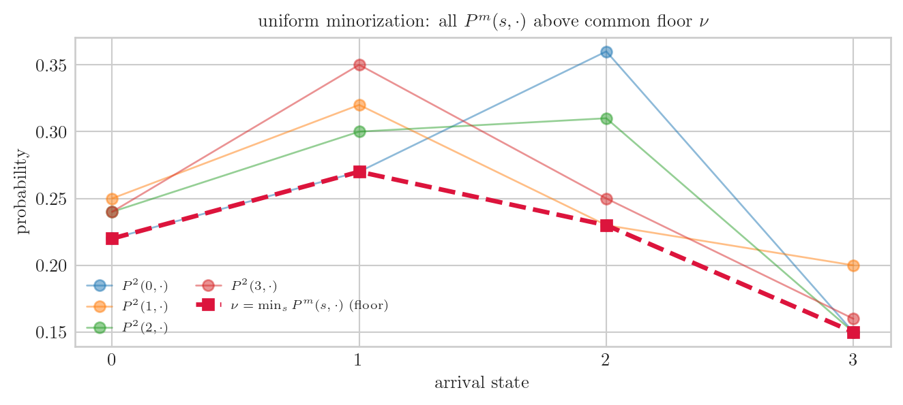

H. 오늘은 마르코프 체인 “안정성” 개념 네 개를 아주 쉽게 풀어요. ψ-irreducibility, small/petite set, aperiodicity, positive Harris recurrence. 이름은 무섭지만 다 한 가지 질문의 변주예요: “이 체인이 장기적으로 잘 섞여서 안정된 평형으로 가는가?”
G. 기호부터 정리해 주세요.
H. 무대 설정이에요.
\(\{S_t\}\) : 시각 \(t = 0, 1, 2, \ldots\) 에 상태가 바뀌는 마르코프 체인 (다음 상태는 현재 상태에만 의존)
\(\mathsf{S}\) : 상태들이 사는 상태공간 (유한할 수도, 연속일 수도)
\(P\) : 전이 커널 — \(P(s, A)\) 는 “지금 \(s\) 에 있을 때 다음 스텝에 집합 \(A\) 로 갈 확률”
H. 이 체인은 irreducible 이에요. 미로로 치면 어느 방에서 출발해도 모든 방에 갈 길이 있다는 거예요.
(b) small / petite set — “그 구역에 들어가면 기억이 리셋된다”
H. 두 번째, 가장 중요해요. 집합 \(C\) 가 small 이라는 건: 어떤 정수 \(m\geq 1\) 과 0 이 아닌 측도 \(\nu\) 가 있어서
\[P^m(s, \cdot) \;\geq\; \nu(\cdot) \quad \text{for all } s\in C\]
이걸 uniform minorization 이라 해요. 풀면: “\(C\) 안 어디서 출발하든, \(m\) 스텝 뒤의 분포가 공통 바닥분포 \(\nu\) 이상”.
G. 왜 중요한가요?
H.\(C\) 안 모든 출발점이 \(m\) 스텝 후 같은 \(\nu\) 만큼의 공통 성분을 가진다는 거예요. 비유하면 — \(C\) 라는 구역에 들어가면 \(m\) 걸음 뒤엔 “어디서 왔는지 잊고 공통 출발선 \(\nu\) 에서 다시 시작”할 확률이 있다는 거죠. 이 기억 리셋이 두 경로를 coupling(짝지어 합치기) 시켜서 체인이 섞이게 만들어요. (이게 앞서 다룬 Doeblin minorization 의 핵심이에요.)
petite 는 살짝 약한 버전 — 고정 \(m\) 대신 여러 스텝수를 확률 \(\{a(m)\}\) 으로 평균낸 sampled kernel \(\sum_m a(m) P^m(s,\cdot) \geq \nu(\cdot)\) 에서 성립. 모든 small set 은 petite 예요.
# small set minorization: C 안 모든 s 에서 P^m(s,·) >= nu(·)# nu(·) := min over s in C of P^m(s,·) (각 도착열의 최솟값) — 이게 0 이 아니면 minorization 성립m =2Pm = np.linalg.matrix_power(P, m)print(f"P^{m} (m={m} 스텝 전이):")print(np.round(Pm, 3))C = [0, 1, 2, 3] # 전체를 C 로 (이 체인은 전체가 small)nu = Pm[C, :].min(axis=0) # 공통 바닥: 각 도착상태로 가는 최소확률print(f"\n공통 바닥분포 nu (= min_s P^{m}(s,·)) = {np.round(nu, 3)}")print(f"nu 총질량 = {nu.sum():.3f} (> 0 이면 minorization 성립, small set ✓)")print("의미: C 안 어디서 출발해도 2스텝 뒤 분포가 이 nu 이상")
P^2 (m=2 스텝 전이):
[[0.22 0.27 0.36 0.15]
[0.25 0.32 0.23 0.2 ]
[0.24 0.3 0.31 0.15]
[0.24 0.35 0.25 0.16]]
공통 바닥분포 nu (= min_s P^2(s,·)) = [0.22 0.27 0.23 0.15]
nu 총질량 = 0.870 (> 0 이면 minorization 성립, small set ✓)
의미: C 안 어디서 출발해도 2스텝 뒤 분포가 이 nu 이상
fig, ax = plt.subplots(figsize=(7, 3.2))x = np.arange(n)for s in C: ax.plot(x, Pm[s], "o-", lw=1, alpha=0.5, label=rf"$P^{m}({s},\cdot)$")ax.plot(x, nu, "s--", color="crimson", lw=2.5, label=r"$\nu=\min_s P^m(s,\cdot)$(floor)")ax.set_xlabel("arrival state"); ax.set_ylabel("probability"); ax.set_xticks(x)ax.set_title(r"uniform minorization: all $P^m(s,\cdot)$ above common floor $\nu$")ax.legend(fontsize=7, ncol=2)plt.tight_layout(); plt.show()

G. 빨간 바닥선(\(\nu\)) 위에 모든 출발점의 분포가 떠 있네요.
H. 그게 minorization 이에요. 그 바닥 \(\nu\) 만큼은 출발점과 무관한 공통 성분 — 이게 섞임의 엔진이에요.
(c) aperiodicity — “짝수 걸음에만 갈 수 있는 함정이 없다”
H. 세 번째. \(\psi\)-irreducible 체인은 \(d\geq 1\) 개의 클래스를 주기적으로(cyclically) 도는 구조로 분해돼요. 이 주기 \(d=1\) 이면 aperiodic.
G. 주기가 있다는 게 무슨 뜻인가요?
H. 예를 들어 두 그룹을 \(A\to B\to A\to B\) 로만 왔다갔다 하면 주기 \(d=2\) — “홀수 걸음엔 반대 그룹, 짝수 걸음엔 제자리 그룹”으로 갇혀요. aperiodic(\(d=1\))은 그런 함정이 없어서 충분히 큰 \(m\) 부터는 아무 때나 갈 수 있어요. 동등하게: 어떤 small set 이 gcd 가 1 인 두 스텝수에서 minorization 을 가지면 aperiodic.
# 주기 d = 각 상태로 돌아오는 시간들의 gcd# 대각성분 P^k[s,s] > 0 인 k 들의 gcdfrom math import gcdfrom functools importreducedef period_of_state(P, s, kmax=20): times = [k for k inrange(1, kmax +1)if np.linalg.matrix_power(P, k)[s, s] >1e-12]returnreduce(gcd, times) if times else0periods = [period_of_state(P, s) for s inrange(n)]print("각 상태의 주기:", periods)print(f"체인 주기 d = {periods[0]} ->", "aperiodic (d=1)"if periods[0] ==1elsef"주기적 (d={periods[0]})")# 대조: 주기 2 인 체인 (두 그룹 왕복)P_periodic = np.array([[0,0,0.5,0.5],[0,0,0.5,0.5],[0.5,0.5,0,0],[0.5,0.5,0,0]])per2 = period_of_state(P_periodic, 0)print(f"\n대조 — 왕복 체인의 주기 d = {per2} (짝수걸음에만 제자리 그룹, 주기적)")
각 상태의 주기: [1, 1, 1, 1]
체인 주기 d = 1 -> aperiodic (d=1)
대조 — 왕복 체인의 주기 d = 2 (짝수걸음에만 제자리 그룹, 주기적)
G. 우리 체인은 \(d=1\) 로 aperiodic, 왕복 체인은 \(d=2\) 군요.
H.\(d=1\) 이라야 분포가 한 점으로 수렴해요. \(d=2\) 면 홀짝으로 영원히 진동하거든요.
(d) positive Harris recurrence + invariant law — “중요한 곳은 무한히 다시 방문, 평형이 존재”
H. 마지막. 두 조각이에요.
Harris recurrence: \(\psi(A) > 0\) 인 모든 집합 \(A\) 와 모든 출발점 \(s\) 에 대해
\[\mathbb{P}_s(S_t \in A \text{ for infinitely many } t) = 1\]
즉 “중요한 영역 \(A\) 는 거의 확실히(a.s.) 무한 번 다시 방문”. (\(\mathbb{P}_s\) 는 \(s\) 에서 출발했을 때의 확률.)
invariant probability\(\pi\): 한 스텝 지나도 안 변하는 분포 —
\[\pi(A) = \int_{\mathsf{S}} P(s, A)\,\pi(ds) \quad \text{for all } A\]
positive Harris recurrent = Harris recurrent + invariant probability \(\pi\) 존재. 이때 \(\pi\) 는 유일해요.
# invariant law pi: pi P = pi (좌고유벡터, 고유값 1) + 방문빈도가 pi 로 수렴evals, evecs = np.linalg.eig(P.T)i1 = np.argmin(np.abs(evals -1.0))pi = np.real(evecs[:, i1]); pi = pi / pi.sum()print(f"invariant law pi (pi P = pi): {np.round(pi, 4)}")print(f"검증 pi @ P = {np.round(pi @ P, 4)} (= pi 면 invariant ✓)")# 긴 trajectory 의 방문빈도가 pi 로 수렴 (Harris + positive)T =100_000s =0; visits = np.zeros(n)for _ inrange(T): s = rng.choice(n, p=P[s]); visits[s] +=1freq = visits / Tprint(f"\n10만 스텝 방문빈도 = {np.round(freq, 4)}")print(f"invariant pi = {np.round(pi, 4)} (거의 일치)")
invariant law pi (pi P = pi): [0.2383 0.3073 0.2873 0.167 ]
검증 pi @ P = [0.2383 0.3073 0.2873 0.167 ] (= pi 면 invariant ✓)
10만 스텝 방문빈도 = [0.2383 0.3065 0.2872 0.1679]
invariant pi = [0.2383 0.3073 0.2873 0.167 ] (거의 일치)